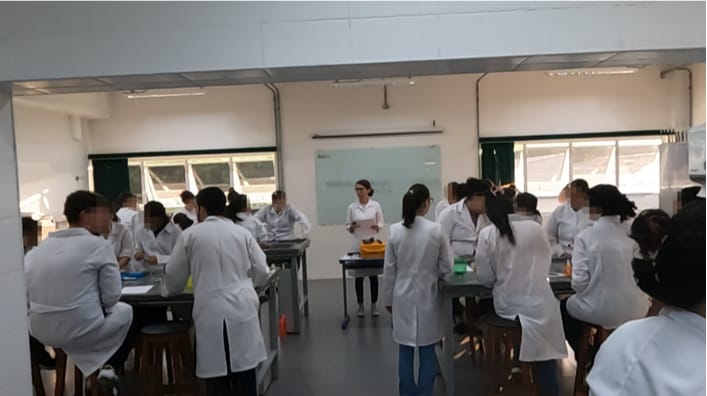
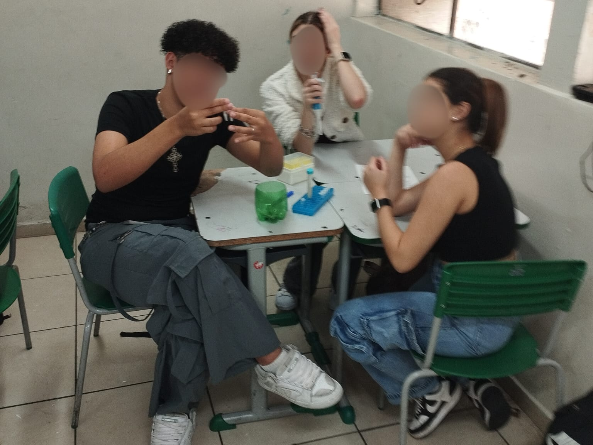
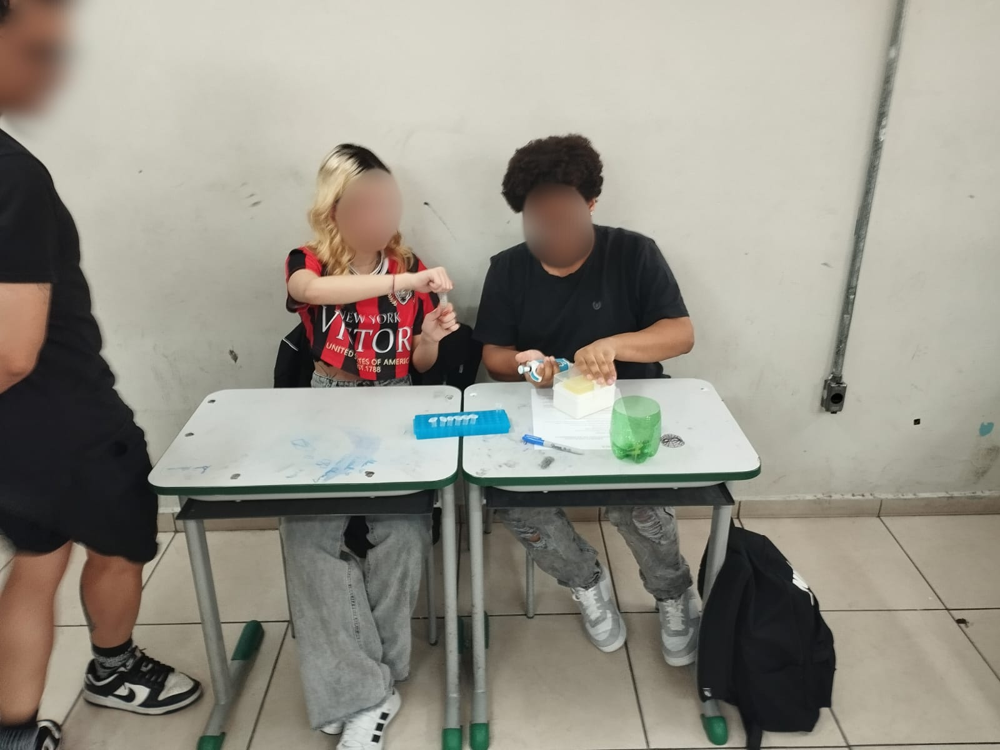
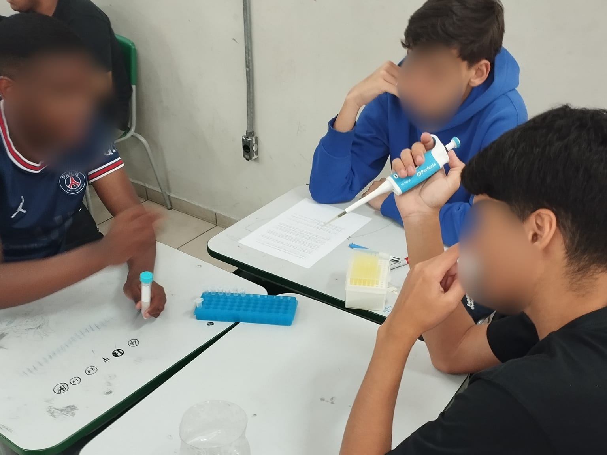
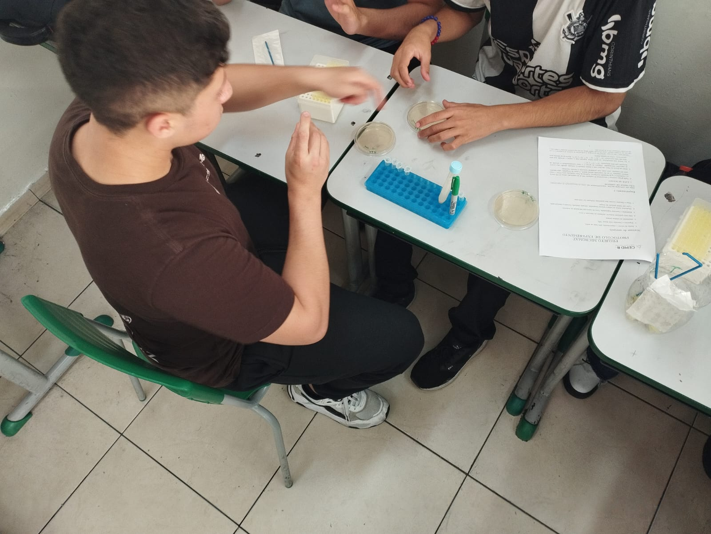
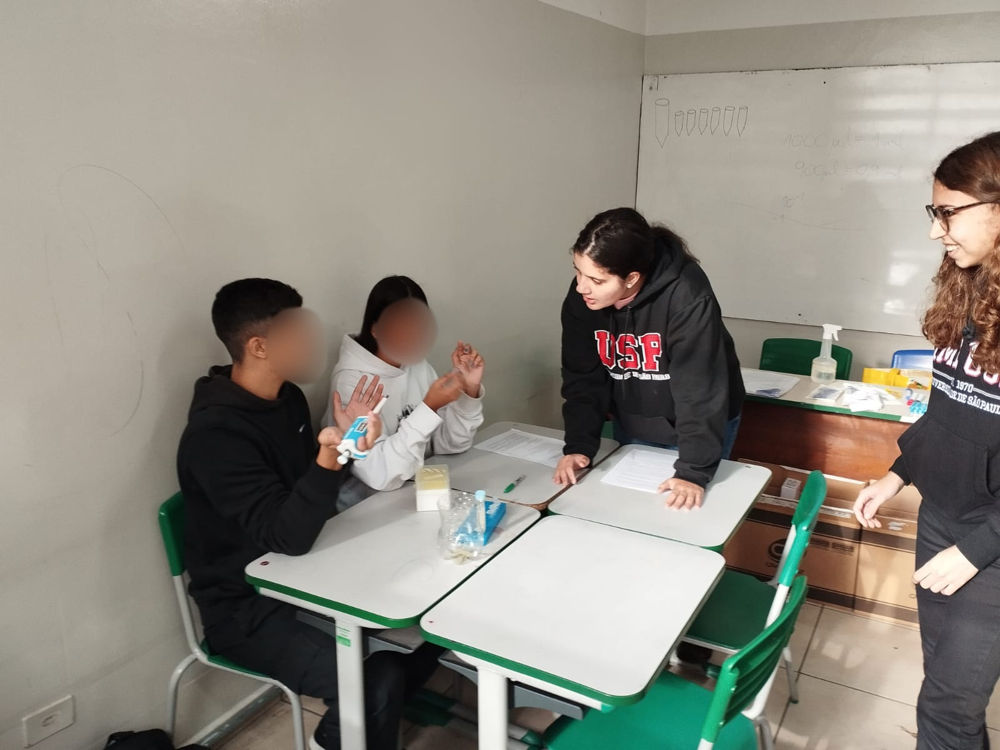
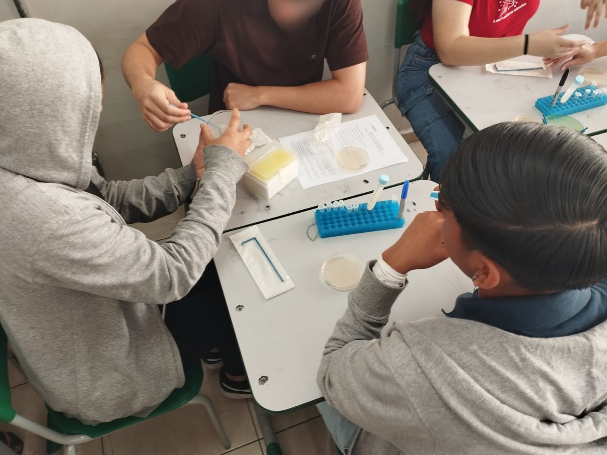
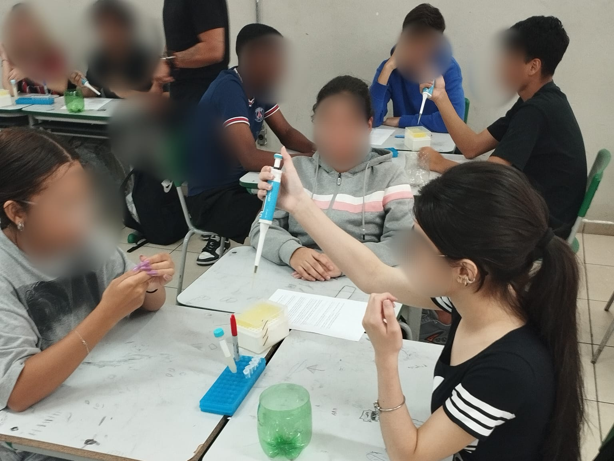
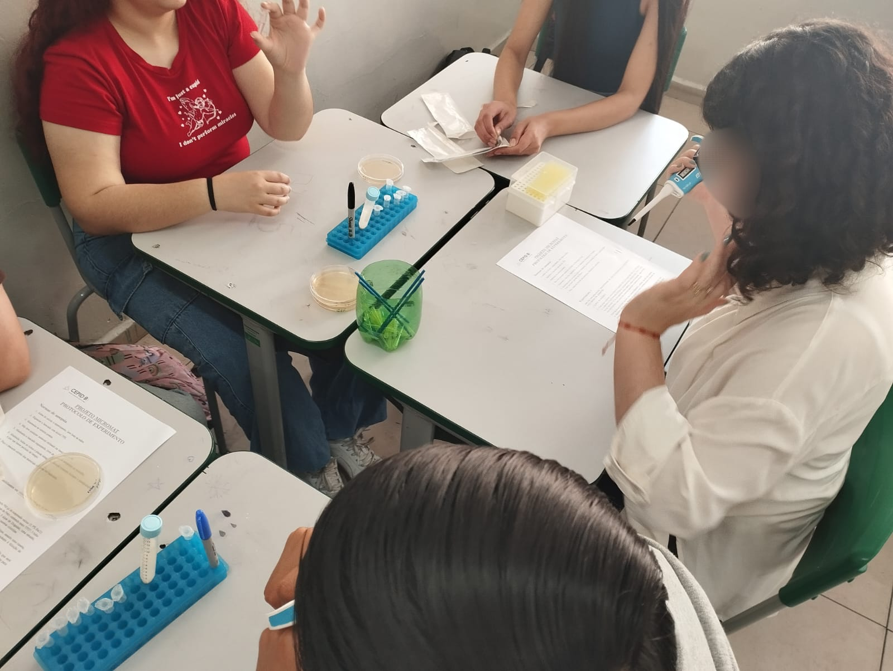

Integração entre matemática e microbiologia por meio de atividades experimentais





Durante as visitas, os alunos participam de atividades experimentais envolvendo crescimento microbiano, diluições, medições e análise de dados. Dessa forma, conceitos matemáticos passam a ser compreendidos de maneira mais concreta e interdisciplinar.




As atividades do projeto MicroMat permitem que os estudantes explorem a matemática de forma prática e aplicada, utilizando experimentos e análises relacionadas à microbiologia. Ao longo das atividades, os alunos desenvolvem habilidades como interpretação de dados, raciocínio lógico, análise de gráficos e pensamento científico, competências importantes para a formação acadêmica e profissional.
Além do aprendizado, o projeto busca despertar a curiosidade, incentivar a investigação científica e apresentar novas possibilidades para o futuro, contribuindo também para experiências que podem enriquecer o currículo e a formação dos estudantes.